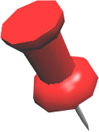

A Note From the Conference Organizer


![You might ask why this conference looks so raw and ... just the way everything is designed. I'll explain now. I am very impressed by how the amateur astronomers around the world help each other as a big community. They contribute to the professional field, they go onto the sidewalk to share the amazing starry night with everyone, they complain about the polluted city sky while they're still sitting on the rooftop struggling spotting that star. YES, they are you, the contributing, sharing, determined amateur astronomers. The conference location suggesting system based on Google Map is a proof of your contributing character. iMessage interface is a way of sharing information and passion. All the events from the conference is to help you become a little bit more cross-disciplined, a bit more sharing, a bit more political, poetical, professional, and a lot more wild! I really hope you enjoy this journey and spread the curiosity towards astronomy and science to more people. Xoxo, July from Plant a Star.](images/u2110-33.png)